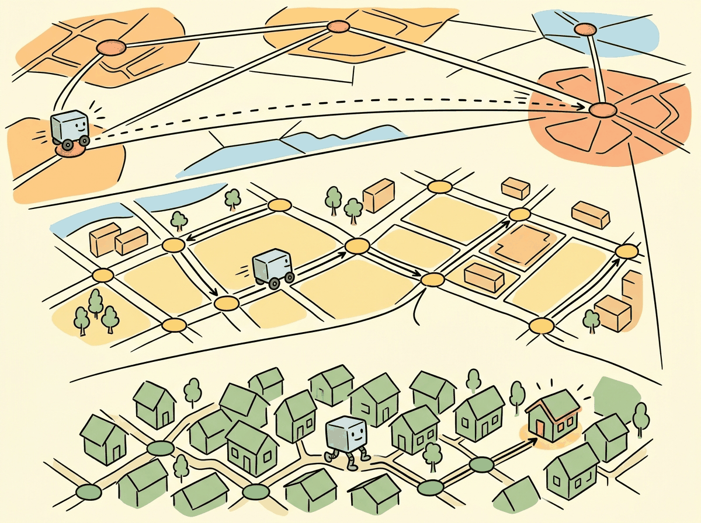

The art of progress is to preserve order amid change and to preserve change amid order.
Vec AI Agent

Prerequisites
Before diving into vector indexing algorithms, make sure you are comfortable with the embedding similarity concepts from Section 18.1, particularly cosine similarity and inner product distance metrics. An intuitive understanding of tree-based data structures and graph traversal will help, though the section builds these concepts from first principles. The discussion of approximate search tradeoffs connects directly to the inference optimization strategies covered in Section 8.1.
Finding the most similar vectors in a collection of millions is a computational challenge that brute-force search cannot solve at scale. Approximate Nearest Neighbor (ANN) algorithms trade a small amount of accuracy for dramatic speedups, enabling sub-millisecond search over billions of vectors. Understanding the internals of HNSW, IVF, and Product Quantization is essential for configuring vector indexes that meet your application's latency, recall, and memory requirements. Building on the embedding models from Section 18.1, this section provides a deep, implementation-level understanding of the algorithms that power every vector database.
1. The Nearest Neighbor Problem
Given a query vector q and a collection of N vectors in d dimensions, the k-nearest neighbor (k-NN) problem asks for the k vectors most similar to q. The brute-force solution computes the distance between q and every vector in the collection, then returns the top k. This requires O(N × d) operations per query, which becomes prohibitive as N grows into the millions. Code Fragment 18.2.1 below puts this into practice.
# Brute-force k-NN search with NumPy
import numpy as np
import time
def brute_force_knn(query, vectors, k=10, metric="cosine"):
"""
Exact nearest neighbor search.
query: (d,) vector
vectors: (N, d) matrix
Returns: indices of k nearest neighbors and their distances
"""
if metric == "cosine":
# For normalized vectors, cosine similarity = dot product
similarities = np.dot(vectors, query)
# Higher similarity = more similar, so negate for argsort
top_k_indices = np.argsort(-similarities)[:k]
top_k_distances = similarities[top_k_indices]
elif metric == "l2":
distances = np.linalg.norm(vectors - query, axis=1)
top_k_indices = np.argsort(distances)[:k]
top_k_distances = distances[top_k_indices]
return top_k_indices, top_k_distances
# Benchmark at different scales
dim = 768
for n_vectors in [10_000, 100_000, 1_000_000]:
vectors = np.random.randn(n_vectors, dim).astype(np.float32)
vectors /= np.linalg.norm(vectors, axis=1, keepdims=True)
query = np.random.randn(dim).astype(np.float32)
query /= np.linalg.norm(query)
start = time.time()
indices, distances = brute_force_knn(query, vectors, k=10)
elapsed = time.time() - start
print(f"N={n_vectors:>10,}: {elapsed*1000:.1f}ms")The implementation above builds brute-force k-NN from scratch for pedagogical clarity. In production, use FAISS (install: pip install faiss-cpu), which provides optimized exact and approximate nearest neighbor search with SIMD acceleration:
# Production equivalent using FAISS
import faiss
import numpy as np
index = faiss.IndexFlatIP(768) # inner product (cosine on normalized vecs)
index.add(vectors) # add all vectors at once
distances, indices = index.search(query.reshape(1, -1), k=10)
At one million vectors with 768 dimensions, brute-force search takes nearly 200ms per query. For real-time applications that need sub-10ms latency (the kind of constraint explored in Chapter 8 on inference optimization), this is unacceptable. This motivates the use of Approximate Nearest Neighbor (ANN) algorithms, which build index structures that enable much faster search at the cost of occasionally missing the true nearest neighbor.
The "curse of dimensionality" means that in high-dimensional spaces, the distance between the nearest and farthest neighbor converges. In 768 dimensions, all points are roughly the same distance from each other, which is exactly why brute-force search still kind of works and why ANN algorithms have to be surprisingly clever.
Measuring ANN Quality: Recall@k
The standard quality metric for ANN algorithms is recall@k: the fraction of true k-nearest neighbors that appear in the ANN algorithm's top-k results. A recall@10 of 0.95 means that on average, 9.5 of the 10 returned results are actual top-10 nearest neighbors. For most RAG applications, recall@10 above 0.95 is sufficient.
2. HNSW: Hierarchical Navigable Small World Graphs
HNSW is the most widely used ANN algorithm in production vector databases. It builds a multi-layer graph where each vector is a node, and edges connect vectors that are close to each other in the embedding space. The graph is navigable: starting from any node, you can reach any other node by following a short path of edges, and greedy traversal (always moving to the neighbor closest to the query) finds excellent approximate nearest neighbors.
Graph Construction
HNSW builds the graph incrementally. When a new vector is inserted, it is assigned a random maximum layer according to an exponential distribution. The algorithm then searches for the nearest neighbors of the new vector at each layer and connects them with bidirectional edges. Two parameters control the graph structure: Figure 18.2.1 illustrates the multi-layer graph structure of HNSW.
- M (max edges per node): Controls the graph connectivity. Higher M means more edges per node, which improves recall but increases memory usage and insertion time. Typical values range from 16 to 64.
- ef_construction (search width during build): Controls how thoroughly the algorithm searches for neighbors during insertion. Higher values produce a better graph but slow down construction. Typical values range from 100 to 400.
Search Algorithm
At query time, HNSW search begins at the top layer's entry point and greedily navigates toward
the query vector. At each layer, it finds the closest node, then descends to the same node in the
layer below. At the bottom layer (layer 0, which contains all vectors), it performs a more thorough
local search controlled by the ef_search parameter. Higher ef_search
values explore more candidates, improving recall at the cost of latency.
Input: query vector q, graph G with L layers, ef_search parameter
Output: k nearest neighbors of q
ep = entry_point // start at top layer entry point
for layer = L down to 1:
// Greedy search: find closest node at this layer
while improvement found:
ep = neighbor of ep closest to q in layer
// Descend: use ep as entry point for next layer
// Layer 0: thorough local search
candidates = priority_queue(ep)
visited = {ep}
results = priority_queue(ep)
while candidates is not empty:
c = closest candidate to q
if dist(c, q) > dist(furthest in results, q):
break // no improvement possible
for each neighbor n of c in layer 0:
if n not in visited:
visited.add(n)
if dist(n, q) < dist(furthest in results, q) or |results| < ef_search:
candidates.add(n)
results.add(n)
if |results| > ef_search:
remove furthest from results
return top k from results
Complexity: O(log N) layers traversed, O(ef_search · M) distance computations at layer 0. Total: O(log N · M + ef_search · M), compared to O(N · d) for brute force.
# HNSW index with FAISS
import faiss
import numpy as np
import time
dim = 768
n_vectors = 1_000_000
# Generate random normalized vectors
np.random.seed(42)
vectors = np.random.randn(n_vectors, dim).astype(np.float32)
faiss.normalize_L2(vectors)
query = np.random.randn(1, dim).astype(np.float32)
faiss.normalize_L2(query)
# Build HNSW index
# M=32: each node connected to ~32 neighbors
# ef_construction=200: search width during build
index = faiss.IndexHNSWFlat(dim, 32)
index.hnsw.efConstruction = 200
print("Building HNSW index...")
start = time.time()
index.add(vectors)
build_time = time.time() - start
print(f"Build time: {build_time:.1f}s")
print(f"Memory: ~{index.ntotal * dim * 4 / 1e9:.2f} GB (vectors only)")
# Search with different ef values to show recall/latency tradeoff
for ef_search in [16, 64, 256]:
index.hnsw.efSearch = ef_search
start = time.time()
distances, indices = index.search(query, k=10)
search_time = (time.time() - start) * 1000
print(f"ef_search={ef_search:>3}: {search_time:.2f}ms, "
f"top result idx={indices[0][0]}")HNSW provides excellent recall and low latency, but it requires storing the full vectors in memory along with the graph structure. For 1 million 768-dimensional float32 vectors, the vectors alone consume ~3 GB. The graph metadata adds another 20 to 50% overhead depending on M. This makes HNSW memory-intensive for very large collections (100M+ vectors), which is where IVF and quantization techniques become essential.
3. IVF: Inverted File Index
The Inverted File (IVF) index partitions the vector space into nlist regions using k-means clustering. Each vector is assigned to its nearest cluster centroid. At query time, the algorithm first identifies the nprobe closest centroids to the query, then performs an exhaustive search only within those clusters. This reduces the number of distance computations from N to approximately N × nprobe / nlist.
IVF Construction
Building an IVF index requires a training phase where k-means clustering is performed on a
representative sample of the data. The number of clusters (nlist) is typically set
to the square root of N, although values between 4×sqrt(N) and 16×sqrt(N) are also
common. More clusters enable more selective search but require more centroids to be compared at
query time.
Code Fragment 18.2.3 below puts this into practice.
# IVF index with FAISS
import faiss
import numpy as np
import time
dim = 768
n_vectors = 1_000_000
np.random.seed(42)
vectors = np.random.randn(n_vectors, dim).astype(np.float32)
faiss.normalize_L2(vectors)
query = np.random.randn(1, dim).astype(np.float32)
faiss.normalize_L2(query)
# IVF with flat (uncompressed) storage within each cell
nlist = 1024 # Number of Voronoi cells (clusters)
quantizer = faiss.IndexFlatIP(dim) # Inner product for normalized vectors
index = faiss.IndexIVFFlat(quantizer, dim, nlist, faiss.METRIC_INNER_PRODUCT)
# IVF requires a training step (k-means on the data)
print("Training IVF index...")
start = time.time()
index.train(vectors)
print(f"Training time: {time.time() - start:.1f}s")
# Add vectors to index
start = time.time()
index.add(vectors)
print(f"Add time: {time.time() - start:.1f}s")
# Search with different nprobe values
for nprobe in [1, 8, 32, 128]:
index.nprobe = nprobe
start = time.time()
distances, indices = index.search(query, k=10)
search_time = (time.time() - start) * 1000
print(f"nprobe={nprobe:>3}: {search_time:.2f}ms, "
f"searched {nprobe * n_vectors // nlist:,} vectors")4. Product Quantization (PQ)
Product Quantization compresses vectors by splitting each d-dimensional vector into m sub-vectors, then quantizing each sub-vector independently using a small codebook. A 768-dimensional vector split into 96 sub-vectors of 8 dimensions each, with 256 codes per sub-vector, requires only 96 bytes of storage instead of 3,072 bytes (768 × 4 for float32). This represents a 32x compression ratio. Figure 18.2.2 shows how product quantization compresses vectors by replacing sub-vectors with codebook indices. Code Fragment 18.2.4 below puts this into practice.
How PQ Works
- Split: Divide each d-dimensional vector into m sub-vectors of d/m dimensions.
- Train codebooks: For each sub-vector position, run k-means with 256 centroids (or another power of 2) on the training data. This produces m codebooks, each with 256 entries.
- Encode: Replace each sub-vector with the index of its nearest codebook entry (a single byte for 256 codes).
- Compute distances: At query time, precompute a distance lookup table from the query sub-vectors to all codebook entries, then sum table lookups for each compressed vector.
# IVF + Product Quantization composite index in FAISS
import faiss
import numpy as np
import time
dim = 768
n_vectors = 1_000_000
np.random.seed(42)
vectors = np.random.randn(n_vectors, dim).astype(np.float32)
faiss.normalize_L2(vectors)
query = np.random.randn(1, dim).astype(np.float32)
faiss.normalize_L2(query)
# IVF-PQ: combines partitioning with compression
nlist = 1024 # Number of IVF partitions
m_subquantizers = 96 # Number of sub-quantizers (must divide dim)
nbits = 8 # Bits per sub-quantizer (256 codes)
index = faiss.IndexIVFPQ(
faiss.IndexFlatIP(dim), # Coarse quantizer
dim,
nlist,
m_subquantizers,
nbits
)
# Train and add
print("Training IVF-PQ index...")
index.train(vectors)
index.add(vectors)
# Memory comparison
flat_memory = n_vectors * dim * 4 # float32
pq_memory = n_vectors * m_subquantizers # 1 byte per sub-quantizer
print(f"Flat memory: {flat_memory / 1e9:.2f} GB")
print(f"PQ memory: {pq_memory / 1e6:.0f} MB")
print(f"Compression: {flat_memory / pq_memory:.0f}x")
# Search
index.nprobe = 32
start = time.time()
distances, indices = index.search(query, k=10)
search_time = (time.time() - start) * 1000
print(f"Search time: {search_time:.2f}ms")5. Composite Indexes and Advanced Techniques
IVF-HNSW
Instead of using a flat (brute-force) coarse quantizer in IVF, the coarse quantizer itself can be an HNSW index. This accelerates the cluster assignment step when there are many clusters (tens of thousands), which is important for very large datasets where you need fine-grained partitioning.
ScaNN (Scalable Nearest Neighbors)
Google's ScaNN algorithm introduces anisotropic vector quantization, which accounts for the direction of quantization error rather than minimizing error magnitude uniformly. Standard PQ minimizes the overall reconstruction error, but ScaNN specifically minimizes the error in the direction that matters for inner product computation. This produces better search quality at the same compression ratio.
The simplest and most aggressive form of quantization converts each float dimension to a single bit: 1 if positive, 0 if negative. This reduces memory by 32x and enables ultra-fast Hamming distance computation. While the accuracy loss is significant when used alone, binary quantization works well as a first-pass filter followed by rescoring against full-precision vectors. Some vector databases (Qdrant, Weaviate) support this as a "binary quantization" or "oversampling + rescore" mode.
6. Index Selection Guide
| Index Type | Build Time | Search Speed | Memory | Recall | Best For |
|---|---|---|---|---|---|
| Flat (brute-force) | None | Slow | High | 100% | < 50K vectors |
| HNSW | Slow | Very fast | High | 98%+ | Low latency, < 10M vectors |
| IVF-Flat | Medium | Fast | High | 95%+ | Moderate scale, updatable |
| IVF-PQ | Medium | Fast | Low | 90%+ | Large scale, memory-constrained |
| HNSW + PQ | Slow | Fast | Medium | 93%+ | Balanced latency and memory |
| IVF-HNSW-PQ | Slow | Very fast | Low | 92%+ | Billion-scale datasets |
Do not over-optimize for benchmarks. ANN benchmark scores (like ann-benchmarks.com) measure performance on specific datasets with specific query patterns. Your production workload may have very different characteristics. Always benchmark with your actual data and query distribution. Additionally, remember that index parameters interact: increasing nprobe in IVF can be more effective than increasing ef_search in HNSW for some data distributions, and vice versa.
7. FAISS Index Factory
FAISS provides an index factory that lets you construct composite indexes using a string descriptor. This is the most convenient way to experiment with different configurations. Code Fragment 18.2.5 below puts this into practice.
# FAISS index factory: composing index types with string descriptors
import faiss
import numpy as np
dim = 768
n_vectors = 500_000
vectors = np.random.randn(n_vectors, dim).astype(np.float32)
faiss.normalize_L2(vectors)
# Index factory string format: "preprocessing,coarse_quantizer,encoding"
index_configs = {
"Flat": "Flat",
"HNSW32": "HNSW32",
"IVF1024,Flat": "IVF1024,Flat",
"IVF1024,PQ96": "IVF1024,PQ96",
"IVF1024,SQ8": "IVF1024,SQ8", # Scalar quantization (8-bit)
}
for name, factory_str in index_configs.items():
index = faiss.index_factory(dim, factory_str, faiss.METRIC_INNER_PRODUCT)
# Train if needed
if not index.is_trained:
index.train(vectors[:100_000]) # Train on subset
index.add(vectors)
# Estimate memory (rough approximation)
if "PQ96" in factory_str:
mem_mb = n_vectors * 96 / 1e6
elif "SQ8" in factory_str:
mem_mb = n_vectors * dim / 1e6
else:
mem_mb = n_vectors * dim * 4 / 1e6
print(f"{name:>20}: {n_vectors:,} vectors, ~{mem_mb:.0f} MB")Section 18.2 Quiz
1. Why does brute-force nearest neighbor search become impractical at scale?
Show Answer
2. What do the parameters M and ef_construction control in HNSW?
Show Answer
3. How does Product Quantization achieve vector compression?
Show Answer
4. In IVF indexing, what happens when you increase the nprobe parameter?
Show Answer
5. When would you choose IVF-PQ over HNSW?
Show Answer
Approximate nearest neighbor search algorithms embody a fundamental principle from computational complexity: trading exactness for efficiency. The curse of dimensionality makes exact nearest neighbor search in high dimensions computationally intractable (provably no faster than brute force in the worst case). ANN algorithms escape this by accepting a small probability of missing the true nearest neighbor in exchange for sublinear query time. This is not a deficiency but a feature: in semantic search, the "second-best" match is usually semantically indistinguishable from the "best" match, so the loss from approximation is negligible while the speed gain is enormous (1000x or more). The IVF and HNSW approaches represent two different strategies for the same tradeoff: IVF uses spatial partitioning (divide the space, search only nearby partitions), while HNSW uses navigable graph structure (follow links that move closer to the query). Both exploit the observation that real-world data has far lower intrinsic dimensionality than its ambient dimensionality, a manifestation of the manifold hypothesis discussed in Section 18.1.
Key Takeaways
- Brute-force search scales linearly with dataset size and becomes impractical beyond ~50K vectors for real-time applications.
- HNSW provides the best recall/latency tradeoff but requires storing full vectors in memory, making it memory-intensive.
- IVF partitions the search space using clustering, reducing the number of comparisons proportional to the
nprobe/nlistratio. - Product Quantization compresses vectors by 16 to 32x, enabling large-scale search in constrained memory environments at the cost of some recall.
- Composite indexes (IVF-PQ, IVF-HNSW-PQ) combine partitioning, graph navigation, and compression for billion-scale search.
- Always benchmark on your data. The optimal index type and parameters depend on your specific dataset size, dimensionality, query patterns, and latency/recall requirements.
- FAISS index factory provides a convenient string-based interface for constructing and experimenting with different composite index configurations.
Who: A platform engineering team at a mid-size e-commerce company (50 million product listings)
Situation: The team was migrating from keyword search to embedding-based semantic search for product discovery, using 768-dimensional vectors from a fine-tuned model.
Problem: Flat (brute-force) search delivered perfect recall but took 800ms per query at their scale, far exceeding the 100ms latency budget for real-time search.
Dilemma: HNSW offered sub-10ms queries with 98% recall but required 120 GB of RAM to hold the full graph in memory. IVF-PQ reduced memory to 15 GB through quantization but dropped recall to 88% and introduced a retraining step whenever the catalog changed significantly.
Decision: They deployed a two-tier architecture: HNSW for the top 5 million high-traffic products (frequently searched categories) and IVF-PQ with a reranking step for the full 50 million catalog as a fallback.
How: Using FAISS, they built the HNSW index with M=32 and ef_construction=200, and the IVF index with 4,096 centroids and PQ compression to 64 bytes per vector. A lightweight cross-encoder reranked the top 50 IVF results.
Result: P95 latency dropped to 35ms, recall stayed above 95% across both tiers, and total memory usage was 45 GB (fitting on a single high-memory instance).
Lesson: Combining index types in a tiered architecture lets you optimize for both latency and recall without paying the full memory cost of keeping everything in a high-fidelity index.
Graph-based indexes with learned routing are replacing static HNSW configurations with neural network-guided neighbor selection, improving recall at the same latency budget. Hybrid quantization combines product quantization with scalar quantization at different index levels, achieving near-exact recall at 16x compression. GPU-accelerated ANN search libraries like RAFT (NVIDIA) and cuVS are moving index construction and search onto GPUs, enabling sub-millisecond queries on billion-scale datasets. Research into streaming index updates addresses the challenge of maintaining index quality as documents are continuously added and deleted, a key limitation of batch-built HNSW graphs.
What's Next?
In the next section, Section 18.3: Vector Database Systems, we survey vector database systems, comparing purpose-built solutions and understanding their production trade-offs.
The definitive HNSW paper. Explains the multi-layer navigable small world graph that powers most production vector databases. Essential reading for understanding index tuning parameters like M and efConstruction.
Introduces Product Quantization (PQ) for compressing high-dimensional vectors while preserving approximate distances. The basis for memory-efficient billion-scale search systems.
The paper behind FAISS, demonstrating GPU-accelerated billion-scale nearest neighbor search. Covers IVF indexing combined with PQ for practical large-scale deployments.
Bernhardsson, E. (2018). "Annoy: Approximate Nearest Neighbors Oh Yeah."
Spotify's lightweight ANN library using random projection trees. Ideal for read-heavy workloads where the index can be built once and memory-mapped across processes.
FAISS Wiki: Guidelines for Index Choice
Practical decision guide for selecting FAISS index types based on dataset size, memory budget, and latency requirements. The best starting point for FAISS configuration.
Standardized benchmarking framework comparing ANN algorithm implementations on recall-vs-throughput curves. Use this to validate vendor performance claims with reproducible numbers.